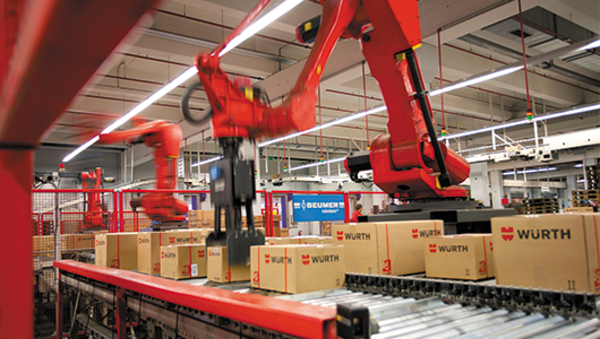

Würth-Gruppe
Weltmarktführer für Befestigungs- & Montagetechnik
Hidden Champion aus Künzelsau: Die Würth-Gruppe ist der weltweit größte Händler von Montage- und Befestigungsmaterial für Handwerk und Industrie. Über 125.000 Produkte, von Schrauben bis Werkzeuge, sorgen für höchste Qualität auf Baustellen und in Werkstätten.

Schrauben & Befestigung
Kernkompetenz: Schrauben, Muttern, Dübel, Unterlegscheiben und Befestigungssysteme für jede Branche.
Produkte125.000+
QualitätDIN & ISO zertifiziert
MarktpositionNr. 1 weltweit

Handwerk & Bau
Werkzeuge, Maschinen, Bauchemie und Arbeitsschutz für Profis.
Kunden3 Mio.+ weltweit
Vertrieb>43.000 Verkäufer
BranchenBau, Holz, Metall, Kfz

Industrie
C-Teile-Management, E-Procurement, Kanban-Systeme und Logistiklösungen für die Industrie.
Industriekunden>20.000
LösungenAutomatisiert & digital
Standorte400+ weltweit
Unternehmensgröße & Erfolge
Würth ist ein globales Familienunternehmen mit einem einzigartigen Vertriebssystem, das persönliche Kundenbetreuung mit moderner Logistik kombiniert.
87.000
Mitarbeiter
80+
Länder
20 Mrd. €
Umsatz 2024
400+
Gesellschaften
Innovationen & Systeme
Würth setzt auf Digitalisierung, Automatisierung und Kundenservice – um Handwerk und Industrie maximal effizient zu unterstützen.
ORSY® Regalsysteme
Würth App & Online-Shop
Automatisierte Kanban-Systeme
E-Procurement Plattformen
Würth Scanner & RFID-Lösungen
24h Logistik & Same-Day Delivery
Meilensteine von Würth
1945
Gründung durch Adolf Würth in Künzelsau. Start als Schraubengroßhandel mit 2 Mitarbeitern in der Nachkriegszeit.
1949
Familienbeteiligung: Sohn Reinhold Würth tritt mit 14 Jahren als Azubi ein und beginnt erste Verkaufsreisen.
1954
Generationenwechsel: Nach dem Tod von Adolf Würth übernimmt der 19-jährige Reinhold die Geschäftsführung.
1950er–1960er
Wachstum & Internationalisierung: Erste Auslandsniederlassung in den Niederlanden (1962), weitere in CH, AT, IT. Fokus auf Qualität und Service.
1969–1970
Globale Expansion: Markteintritt in die USA (1969) und Südafrika (1970). Aufbau eines weltweiten Produktportfolios mit 125.000 Artikeln.
1987
Einführung des Stiftungsmodells – langfristige Sicherung der Unabhängigkeit und Familienkontrolle.
1999
Diversifikation: Gründung der Würth Industrie Service GmbH & Co. KG für Industriekunden, Erweiterung in neue Geschäftsfelder.
2001
Umsatzmeilenstein: 5 Mrd. € erreicht. Reinhold Würth wird Professor für Unternehmertum an der Universität Karlsruhe.
2006
Generationenwechsel: Bettina Würth übernimmt den Beiratsvorsitz, Reinhold wird Ehrenvorsitzender. Tod von Alma Würth.
2010er
Innovation & Digitalisierung: Über 400 Gesellschaften in 80+ Ländern, Umsatz 13,6 Mrd. €. Einführung von E-Procurement und Würth-App.
2025
Aktuelle Führung: Enkel Benjamin Würth wird Vorsitzender, Sebastian Würth übernimmt den Beirat. 87.000 Mitarbeiter weltweit.